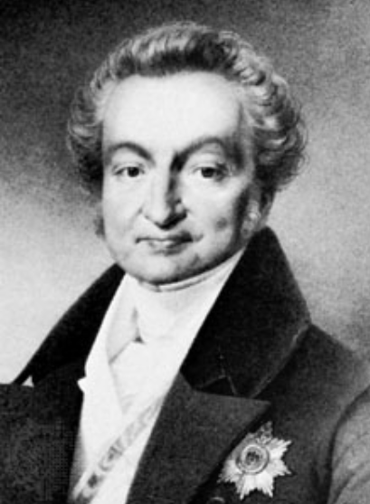
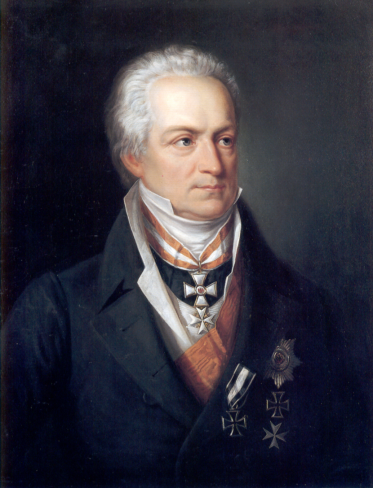
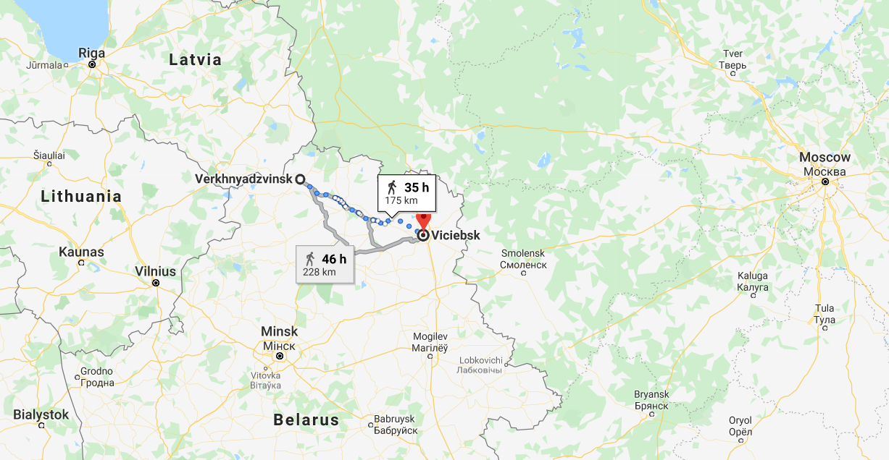
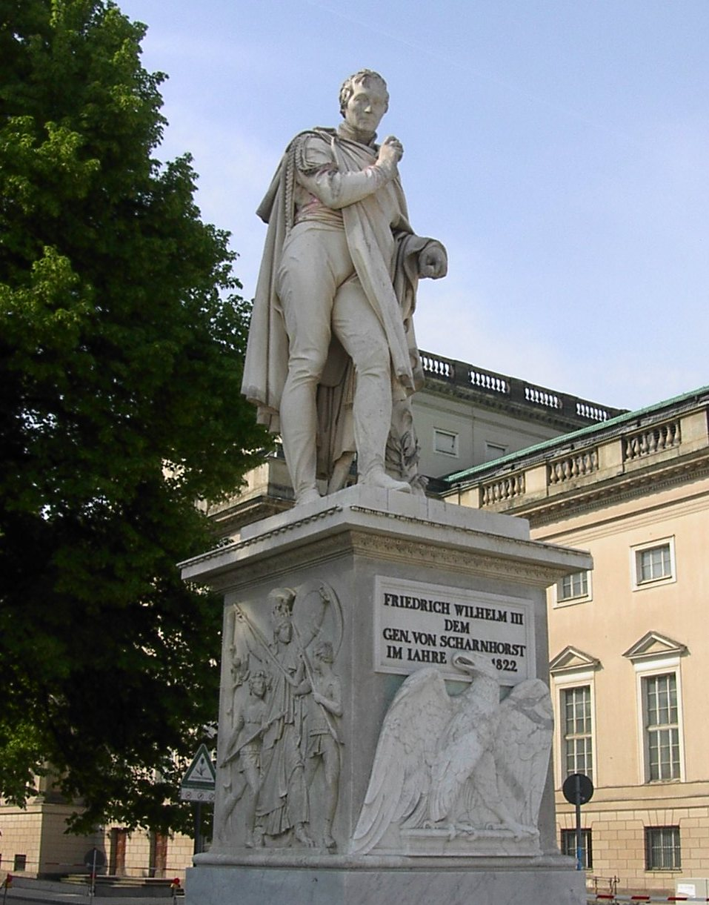

지도와 공약(空約) - 프로이센 장교들의 이탈
게시: 2022-03-28T06:30:36+09:00
안실리온(Friedrich Ancillon)의 조언은 꽤 정곡을 찌르는 것이었습니다. 그는 국적에 상관없이 귀족이나 신사라면 모두가 프랑스어를 쓰는 것을 자랑스럽게 여기던 당대의 지식인답게, 야만스러운 러시아보다는 문명국인 프랑스 친화적인 노선을 취하기를 권고하며 러시아 장군들의 무능력 등을 비난하기도 하고, 스페인 민중과는 달리 프로이센 국민들에게는 종교적인 광기가 부족하기 때문에 스페인식 민중 투쟁은 일어나지 않을 거라는 등의 지극히 주관적인 평가도 했습니다. 그러나, 누가 봐도 그럴싸한 이유도 내놓았습니다. 바로 러시아와 프랑스의 지리적 위치였습니다. 기동력이 좋은 군대를 가진 프랑스는 바로 지척에 있는데 러시아는 멀리 떨어져 있다는 점이었지요. 또한 그렇기 때문에 러시아는 전투에서 승리해도 유럽 사회에 뭔가 근본적인 변화는 만들기 어렵지만, 한번이라도 지면 곧장 동맹국을 버리고 먼 고국으로 돌아가버린다는 점을 지적했습니다.

(안실리온은 베를린 태생이지만 원래 증조부가 프랑스인으로서 본인은 스위스 제네바에서 공부했습니다. 역사학자로 이름을 날린 그는 프로이센 육군사관학교의 교수, 이어서 당시 왕세자이던 프리드리히 빌헬름 4세(Friedrich Wilhelm IV)의 가정교사가 되었습니다. 그는 자유주의자로 이름을 날렸으나 정작 프로이센 국가 체제에 대해서는 경직된 사회계급을 지키는 것이 이상적인 사회의 모습이라는 입장을 취했습니다. 또한 메테르니히와 함께 유럽의 구체제 유지가 목적인 빈(Wien) 체제를 위해 일했습니다. 요약하면 항상 강자 또는 기득권을 위해 일하는 사람이었습니다.)

(하르덴베르크는 예나-아우어슈테트의 참패 이후 농노제를 폐지하는 등 슈타인과 함께 프로이센의 군, 경제, 사회, 특히 교육 등 전체 분야에서 개혁을 이끈 관료입니다. 그도 입헌군주제에 대해 꾸준히 연구를 하고 있었으나 끝내 그 도입을 시도하지는 않았고, 메테르니히와 함께 유럽의 구체제 유지에 공헌했다는 비난을 받았습니다.) 안실리온의 이야기도 매우 설득력이 있었습니다만, 프리드리히 빌헬름이 끝내 프랑스 편에 붙기로 한 것은 러시아의 태도 때문이었습니다. 그 무렵 이미 알렉산드르는 프랑스와의 전쟁이 벌어질 경우 최대한 러시아 안쪽으로 프랑스군을 끌어들인 뒤 굶주리고 지친 프랑스군을 격파한다는 기본 계획을 가지고 있었습니다. 물론 이때까지만 해도 모스크바까지 후퇴한다는 생각은 전혀 없었고, 퓰의 계획에 따라 오늘날 벨라루스에 있는 드리사(Drissa)에서 프랑스군과 싸울 생각이었습니다. 따라서, 프랑스군이 프로이센 국경을 넘을 경우 즉각 전체 러시아 야전군을 동원하여 프로이센으로 달려가겠다는 약속은 사실상 공약(空約)에 불과했습니다.

(드리사(Drissa, 벨라루스어로는 Vierchniadzvinsk)에서 비텝스크(Vitebsk, 벨라루스어로는 Viciebsk)까지의 거리입니다.) 프리드리히 빌헬름이 이런 결정을 내리고 있을 때, 샤른호스트(Gerhard Johann David von Scharnhorst)는 비밀리에 페체르부르그에 들어가 러시아 측과 구체적인 군사작전 안에 대해 설득 및 협의를 하고 있었습니다. 이 두 나라의 군사 동맹은 결코 쉬운 일이 아니었습니다. 처음부터 프로이센은 러시아가 프로이센을 총알받이로 쓸 뿐 적극적으로 도울 생각이 없으므로 프랑스와의 전쟁이 벌어질 경우 괜히 프로이센의 국토만 전쟁의 참화를 겪을 지 모른다고 의심했고, 실제로 나폴레옹이 전쟁을 일으킬 경우 공세보다는 수세로 대응할 작정이던 러시아는 갈팡질팡하는 프로이센이 그런 위험을 알면서도 과연 러시아와 손을 잡고 프랑스와 죽어라 싸울 것인지 의심했습니다. 그런 두 나라의 군사 동맹이 체결 직전까지 갈 수 있었던 것은 샤른호스트의 논리적인 프로이센의 입장 설명이었습니다. 그가 러시아 측에 설명한 내용은 이랬습니다. 1) 러시아가 프로이센과 동맹을 맺고, 나폴레옹이 프로이센 국경을 넘을 때 러시아군을 보내 프로이센을 돕는다면, 프로이센군은 각지의 요새에서 농성하면서 최소 10만의 프랑스군을 붙잡아둘 수 있다. 게다가 프랑스군의 침략에 맞서 프로이센 뿐만 아니라 북부 독일 전체가 영국의 무기 지원을 받아 스페인처럼 민중 반란을 일으킬 것이다. 이 경우 또 10만 이상의 프랑스군이 독일에 발이 묶일 것이다. 2) 그런데 만약 러시아가 적극적인 공세로 나오지 않고 러시아 영토 내에서 방어전만 수행할 것이라면 프로이센은 어쩔 수 없이 프랑스와 연합해야 한다. 그럴 경우 러시아군은 프로이센에 발이 묶여있어야 할 프랑스군 20만에 더해 프로이센군까지 합한 군대와 싸워야 하고, 러시아 영토는 쑥대밭이 될 것이다. 3) 러시아가 프랑스의 침공을 받으면 러시아령 폴란드가 가만히 있겠는가? 그들도 반란을 일으킬 것이다. 4) 게다가 오스만 투르크가 그 기회를 놓치지 않고 러시아 남쪽 국경에서 다시 전쟁을 일으킬 것이다. 5) 일이 그렇게 되면 발칸 반도의 러시아 점령지를 탐내던 오스트리아가 가만히 있으리라 생각하는가? 이렇게 논리정연한 설득에는 러시아도 고개를 끄덕일 수 밖에 없었습니다. 물론 항상 이론과 실제가 일치하는 것은 아닙니다. 이때 샤른호스트 말대로 러시아가 수비가 아닌 공격으로 나왔다면 우리가 지금 배우는 제1 외국어는 영어가 아니라 프랑스어였을 가능성도 있습니다.

(샤른호스트는 흔히 생각하는 것과는 달리 나이가 많아서 나폴레옹보다 무려 14살 연상이었습니다. 원래 프로이센 출신이 아니라 하노버의 자작농의 아들이었는데, 독학으로 공부하여 사관학교에 들어갔고 임관 이후에도 공부를 계속하여 여러가지 군사학 책을 썼습니다. 그러나 출신이 귀족이 아니다 보니 승진은 늦어서 거의 40이 다 되어서야 소령으로 진급할 수 있었습니다. 하지만 군사 이론가로서의 명성은 높아서, 독일 여기저기서 스카웃 제의가 많이 들어왔고, 그 중에서 중령의 승진과 함께 여태까지 받던 급여의 2배를 주고 무엇보다 귀족 작위를 주겠다는 제안을 했던 프로이센으로 1801년에 군적을 옮겼습니다. 그는 프로이센군에서 병사들에 대한 체벌을 없애고 출신이 아니라 능력에 의한 승진, 외국인 모병 금지 등을 실시했으며, 많은 후진을 양성했습니다. 클라우제비츠도 그의 학생 중 하나였습니다. 그는 나폴레옹 타도를 위해 그야말로 이를 갈며 준비를 하여 1813년 전투에 나섰는데, 그럼에도 불구하고 그 첫 전투였던 뤼첸(Lützen) 전투에서 나폴레옹에게 패배를 당했을 뿐만 아니라 발에 부상까지 입었습니다. 그 부상은 원래 별것 아니었으나 지친 몸으로 드레스덴까지 후퇴하는 와중에 부상이 덧났고, 결국 그것이 원인이 되어 1~2달 후에 57세의 이른 나이로 병사했습니다. 사진은 베를린에 있는 그의 석상인데, 그의 죽음을 슬퍼한 프리드리히 빌헬름 3세가 특별히 세운 것입니다.) 샤른호스트의 노력 덕분에 프로이센과 러시아는 프랑스와의 전쟁이 벌어질 경우 구체적으로 어떤 사단이 어디로 이동할지, 심지어 그 목적지가 막힐 경우 플랜 B로는 어디로 향할지에 대한 세부 계획까지 꼼꼼히 작성하고 서로 동의한 상태였습니다. 그 계획의 기본 내용은 프로이센군은 베를린을 과감히 포기한 채 각지의 요새로 들어가 프랑스군을 붙잡아두고, 그 사이에 러시아군은 즉각 비스와 강을 건너 프로이센군과 합류한다는 것이었습니다. 하지만 샤른호스트가 그렇게 혼신의 노력으로 러시아 측의 마음을 돌리고 밤새도록 상세 작전계획안을 짜놓았더니 날아온 소식은 프리드리히 빌헬름이 나폴레옹의 편에 서기로 했다는 것이었습니다. 정말 샤른호스트는 '더러워서 못해먹겠네'라는 심정이었고, 실제로 전역 신청서를 제출했습니다. 그러나 그래도 미안한 마음이 있었던 프리드리히 빌헬름은 전역 대신 무제한 휴가를 주었고, 대신 그를 왕실 고문으로 유지하며 프로이센 각지의 요새와 군사학교, 무기공장 등을 감독하는 일을 맡겼습니다. 결정은 국왕이 내리는 것이지만, 그 뒷수습은 각료들이 해야 했습니다. 총리 하르덴베르크는 주프로이센 러시아 대사인 리벤(Dominic Lieven)에게 프로이센이 프랑스를 택하게 된 것은 어디까지나 강압에 의한 것이며 프로이센의 진심은 러시아 측에 있으니 프로이센에게 적의를 품지 말아달라는 탄원을 해야 했습니다. 물론 그런 개솔휘에 대해 리벤은 '짜르께서는 프로이센의 이런 태도를 좌시하지 않으실 것'이라는 단호한 대답을 줄 수 밖에 없었습니다. 다만 하르덴베르크의 이런 모양새 빠지는 호소는 나름 성과를 거두었습니다. 리벤은 러시아 본국에 대해 프리드리히 빌헬름의 결정에 대해 정확하게 '프로이센 국왕의 결정은 그의 신념보다는 그의 우유부단함을 보여준다'라고 평가하면서 '자발적으로 프랑스와 연합하는 것은 아니라고 확신한다'라고 보고했습니다. 1812년의 비극을 겪은 후, 결국 1813년 결성된 러시아-프로이센 동맹은 프로이센 각료들의 이런 자존심 죽인 노력이 있었기 때문에 가능했던 것입니다. 결국 프로이센은 나폴레옹의 러시아 원정에 강제로 동참을 해야 했고, 2만의 병력과 함께 상당량의 군수품, 수천 마리의 말과 마차를 그랑다르메의 일원으로 바쳐야 했습니다. 프리드리히 빌헬름도 좋아서 그렇게 한 것은 아니었지만, 그의 속을 아는지 모르는지 그의 부하들, 특히 군 내의 강경파 장교들은 프리드리히 빌헬름의 결정에 펄펄 뛰었습니다. 전체 장교단의 무려 1/4에 해당하는 300여 명의 장교들이 '프랑스 놈들 밑에서 복무하느니 차라리 때려 치운다'라며 정말 장교직을 버렸고, 상당수가 실제로 프로이센을 떠났습니다. 일부는 스페인으로, 일부는 영국으로 갔고, 클라우제비츠를 비롯한 일부 장교들은 러시아로 넘어가 러시아군에 가담했습니다. 어떻게 보면 이런 장교들의 독단적 행동은 '책임질 일이 없는 젊은이들의 경거망동'이었지만, 이들의 존재 덕분에 러시아는 프로이센에 대해 과다한 악감정은 가지지 않게 되었고 특히 1812년 말 요크 대공이 러시아와 단독강화를 맺을 때도 클라우제비츠처럼 러시아군 소속 프로이센 장교들이 양측의 의심을 잠재우는데 큰 역할을 했습니다. 결국 1812년 이전의 일을 요역하면, 전통의 강국이자 문명세계를 대표하는 프랑스와 야만적인 동구의 신흥 강국 러시아 사이에서 줄타기 외교를 벌이던 프로이센이 결국 굴욕을 참고 프랑스에게 굴복한 것은 지리적 위치와 러시아의 소극적 태도 때문이었습니다. 그리고 이 상황은 1813년 봄에도 그대로 이어집니다. 프로이센으로 하여금 과감히 러시아의 손을 잡게한 요인은 무엇이었을까요? Source : The Life of Napoleon Bonaparte, by William Milligan Sloane Napoleon and the Struggle for Germany, by Leggiere, Michael V
https://en.wikipedia.org/wiki/G%C5%82og%C3%B3w https://en.wikipedia.org/wiki/Friedrich_Ancillon https://en.wikipedia.org/wiki/Karl_August_von_Hardenberg https://en.wikipedia.org/wiki/Gerhard_von_Scharnhorst